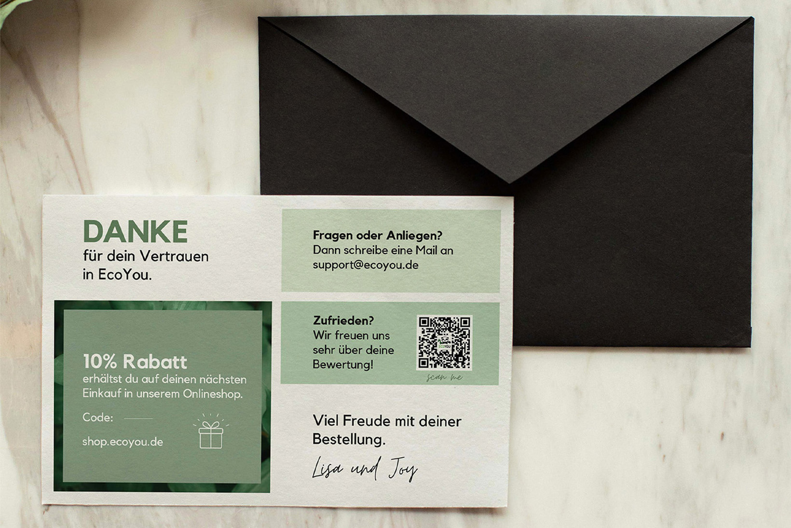
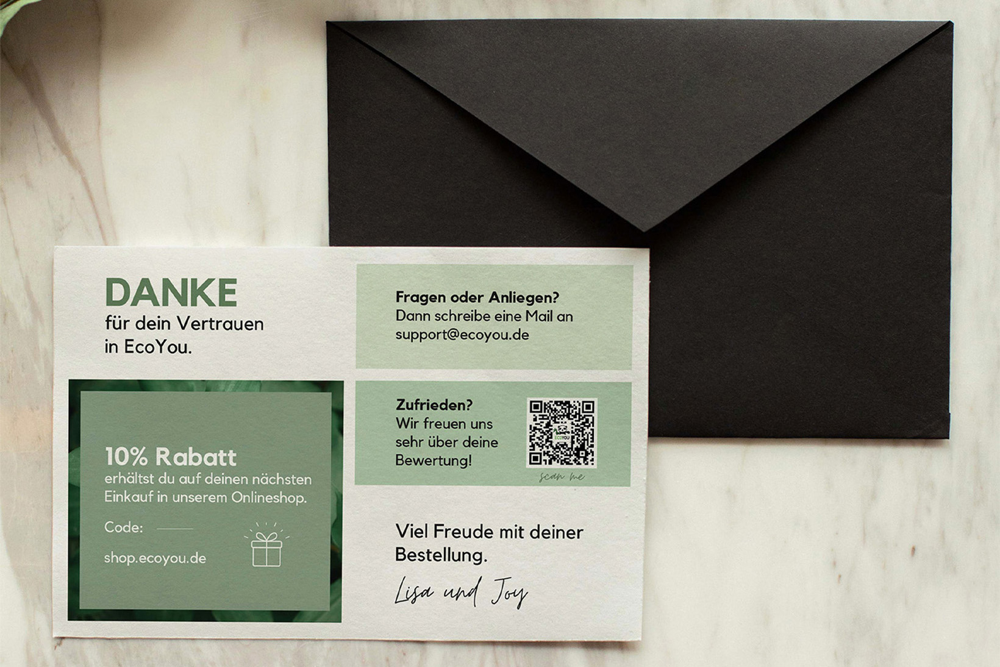

2021
Projekt im Praktikum - Karten für EcoYou
Während meines Praktikums habe ich sämtliche Karten, darunter Dankes-
und DIY-Karten, in Abobe Illustrator entworfen.
Diese Karten wurden gezielt entwickelt, um den Kunden
eine zusätzliche Wertschätzung entgegenzubringen und wurden regelmäßig als Teil der Bestellungen mitgesendet.
In enger Zusammenarbeit mit dem EcoYou-Team habe ich darauf hingearbeitet, dass die Karten sowohl ästhetisch
als auch funktional sind.